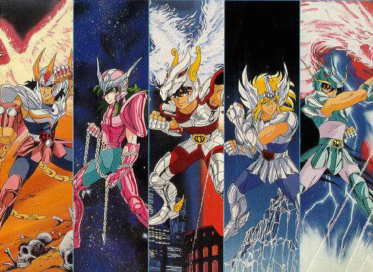

As antigas guerras santas

Desde o início dos tempos, os deuses travavam
intensas batalhas em disputa do universo. É dito
que quando o mal ameaça novamente a Terra,
Atena, a deusa da
bravura e da sabedoria,
surge para defender os oprimidos. Desde os
tempos antigos, nobres cavaleiros lutam pela
verdade e pela justiça, ao lado da deusa Atena.
Esses guerreiros lendários são chamados
de... Cavaleiros do Zodíaco
Os guerreiros mais poderosos da Terra

Os Cavaleiros de Atena
(聖闘士セイントのセイント do japonês, "Santos de
Atena", Cavaleiros de Atena) são o exército de Atena,
a deusa da sabedoria, que protegem a paz na Terra
e que, até a Guerra Galática, eram desconhecidos
pelos humanos e eram só lendas da mitologia grega
pra eles. Eles estão por trás de todas as vitórias
inexplicáveis em guerras travadas entre humanos
durante a história. Vindo dos quatro cantos do
mundo, eles são dotados de força e coragem. Fiéis
a Atena, que odeia armas, seus corpos são a única
arma que dispõem para lutar (há exceções). Eles
são capazes de romper o céu com as mãos e abrir
fendas na terra com seus chutes. Sempre que o mal
se manifesta, os Cavaleiros de Atena aparecem
para combatê-lo.